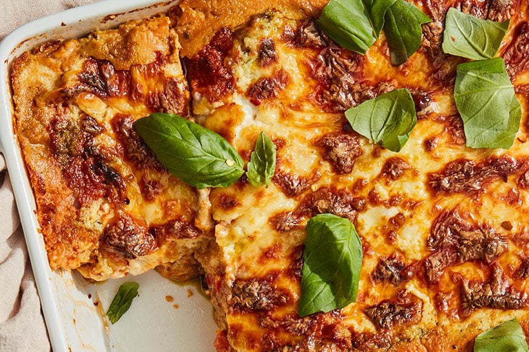

Lasagana

Description
This easy Lasagna Recipe is meaty, cheesy, and packed with flavor in every bite. Homemade lasagna is better than
any restaurant version and it feeds a crowd for way less than going out to eat.
Ingredients
- Pasta
- Cheese
- Parmesan cheese
- Mozzarella
- Lean ground beef
- Eggs
- Onion
- Canned tomatoes
- Pepper
- Parsley
- Garlic
- Basil
- Oregano
Directions
- Cook the ground meat in a skillet until browned and crumbly. Add the onion and continue cooking until it's
translucent. Stir in the canned tomato products, half of the parsley, garlic, basil, 1.5 teaspoons of salt,
oregano, and sugar.
- Boil the lasagna noodles in lightly salted water until they're al dente.
- Mix cottage cheese, Parmesan cheese, eggs, the remaining parsley, the remaining salt, and pepper in a bowl.
- Layer the ingredients according to the recipe (starting with sauce and ending with mozzarella) until the
lasagna is assembled.
- Cover with foil and bake in the preheated oven for about half an hour. Remove the foil and continue baking
until the top is golden brown.